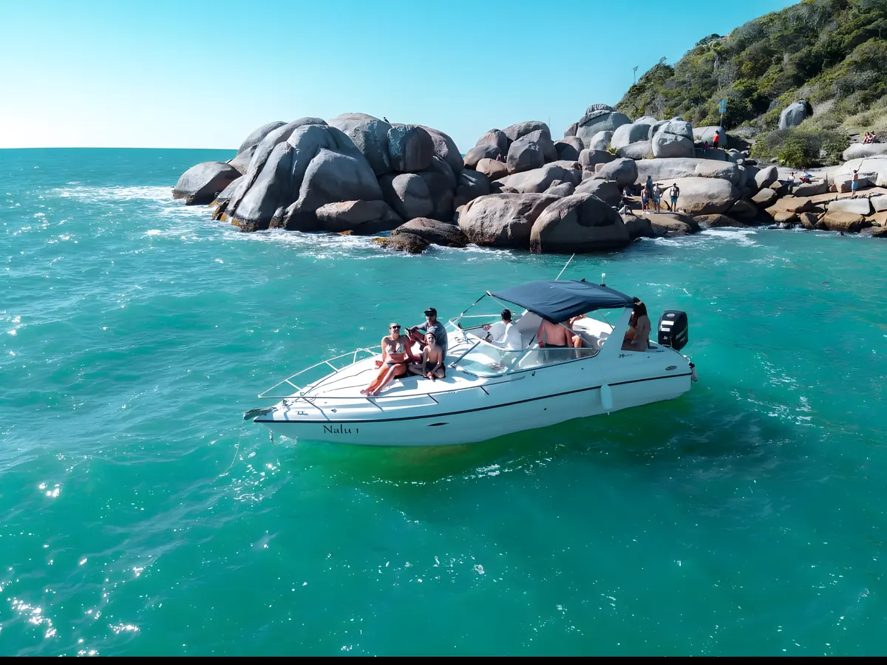
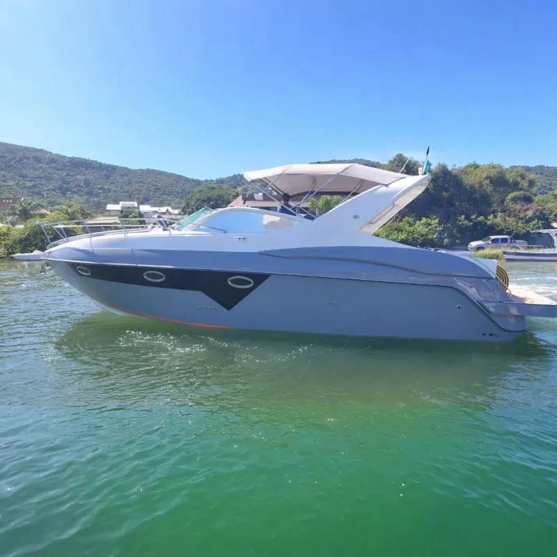
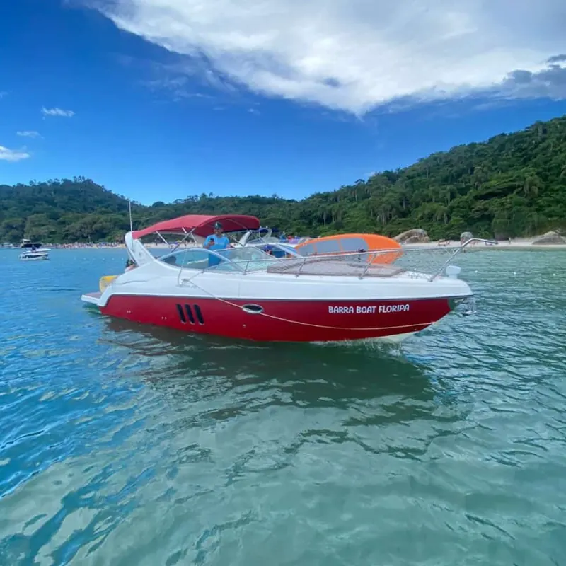
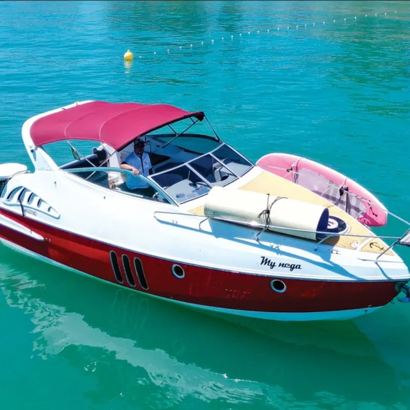

27°34′28″S48°25′30″W
Marinheiro e combustível inclusos, saindo do Canal da Barra da Lagoa desde 2010.




Rod. Jorn. Manoel de Menezes, 3007Barra da Lagoa, Florianópolis, SC

 Phantom 36 C
Phantom 36 C Phantom 30 C
Phantom 30 C Cabrasmar 37
Cabrasmar 37